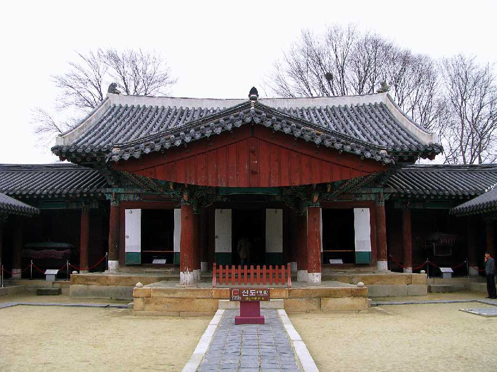
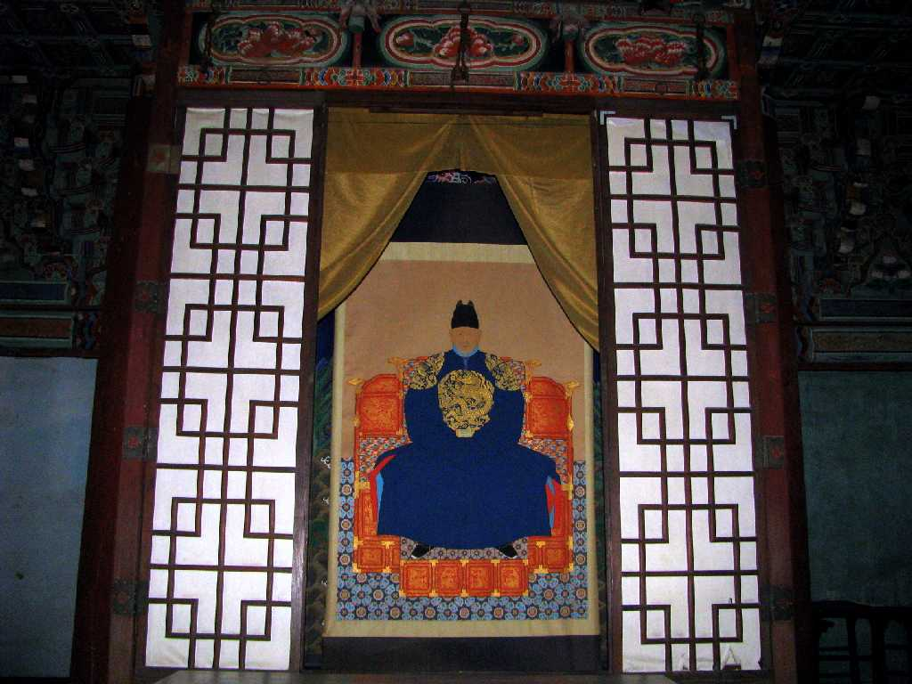
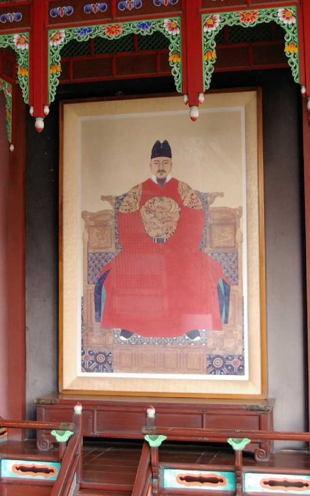

Gyeonggijeon 全州 慶基殿
慶基殿は朝鮮王朝の始祖李成桂の肖像画を奉るために１４１０年に創建された

Taejong 太祖
李氏朝鮮初代王李成桂 在位１３９３～１３９８年 全州地方に勢力をもっていた有力地方豪族が中央政界に進出し初代王に即位した

Sejong 世宗
李氏朝鮮第４代王李祹 在位１４１８～１４５０年 世宗大王と言われ朝鮮王朝時代の歴代君主中最も優れた君主とされ朝鮮語を標記するための表音文字であるハングル文字を１４４６年に「訓民正音」の名で交付した